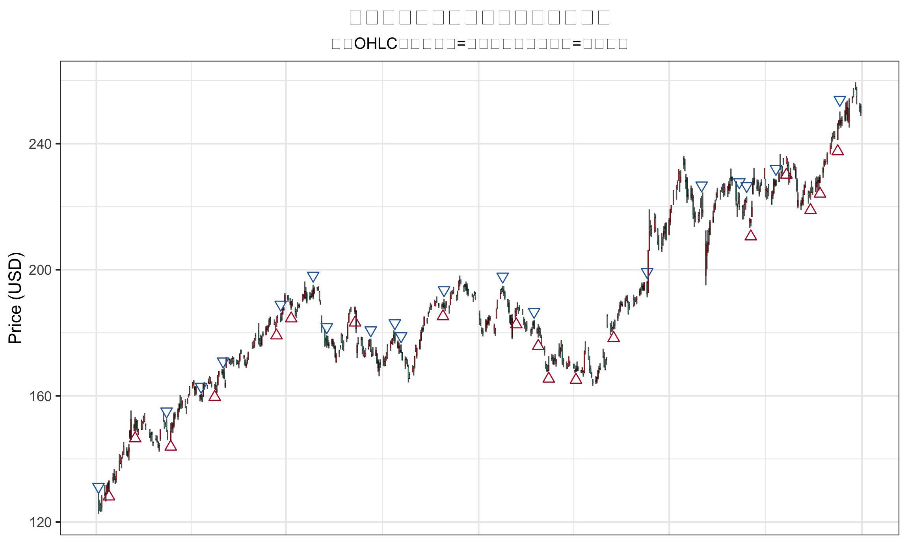
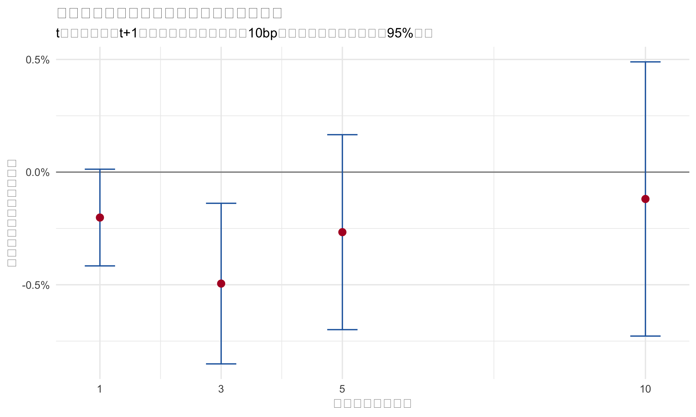

蜡烛图：从图形语言到可检验证据
问题现场
同一根长下影线，有人称它为“探底成功”，有人认为只是盘中波动；第二天上涨之后，几乎所有解释都会显得顺理成章。真正困难的不是给已经发生的行情讲故事，而是在收盘时刻写下一条机器可以执行、未来数据不能参与、失败也能被记录的规则。
蜡烛图把一个交易周期的开盘价、最高价、最低价和收盘价压缩到一根图形中。史蒂夫·尼森的经典著作系统整理了蜡烛图形态及其与西方技术工具的组合方法 [@nison2001]。本书继承这套形态语言，但把重点从“记住名字”移到“定义—检测—检验—证伪”。图形是观察工具，不是因果证明；识别到形态，只能得到候选信号。
学习目标
读完本章，你应当能够：
- 解释一根蜡烛线如何编码OHLC信息；
- 区分经典解释、研究假设、样本结果和稳健结论；
- 把方向性形态转换为
-1/0/1信号； - 设计不使用未来数据的最小事件研究；
- 用R与Python在同一冻结数据上复现吞没形态检测。
经典形态与市场机制
蜡烛实体表示开盘与收盘之间的区间，上影线连接实体上端与最高价，下影线连接实体下端与最低价。收盘高于开盘称为阳线，反之称为阴线。实体较大意味着本周期内一方把价格从开盘附近持续推向收盘；影线较长意味着价格曾经远离实体，但未能把该位置维持到收盘。
经典解释通常把阳线理解为买方占优，把长上影理解为高位供给或获利回吐，把长下影理解为低位承接。这些说法提供了可检验的机制假设，却不能从单根K线直接推断“谁在买”“主力是否进场”。相同图形可能由流动性冲击、隔夜信息、指数调仓或随机撮合产生。方向还依赖上下文：下跌后的长下影可被称为锤子线，上涨后的相同几何外观则可能被称为上吊线。
可计算定义
记第 \(t\) 个交易日的开、高、低、收为 \(O_t,H_t,L_t,C_t\)。定义：
\[ R_t=H_t-L_t,\quad B_t=|C_t-O_t|,\quad U_t=H_t-\max(O_t,C_t),\quad D_t=\min(O_t,C_t)-L_t. \]
为跨价格区间比较，使用比例 \(b_t=B_t/R_t\)、\(u_t=U_t/R_t\)、\(d_t=D_t/R_t\)。若 \(R_t=0\)，本书用机器精度作为分母下限，并把该日视为没有方向信息。一个示例性锤子线几何条件可以写成 \(d_t>2/3\)、\(u_t\le 0.1\)、\(b_t>0.1\)。eCandleSticks::add_csp_hammer() 正是按当前源码中的这些默认阈值检测。
方向信号记为 \(s_t\in\{-1,0,1\}\)。看涨形态取1，看跌形态取-1，没有信号取0。形态在 \(t\) 日收盘后才完整，故最早使用 \(t+1\) 日开盘成交。这个时点约束比形态名称更重要。
研究设计
全书使用冻结的AAPL日线：2010年1月4日至2025年5月16日，共3,867个交易日。调整后收盘价与原始收盘价之比被同步应用于OHLC，以避免拆股制造伪缺口；成交量、原始价格和调整因子保留用于审计。
本章以吞没形态为最小实验。信号在 \(t\) 日收盘识别，\(t+1\) 日开盘进入，持有5个交易日后在开盘退出，双边总成本10个基点。看跌形态的收益乘以-1，使正值统一表示“方向判断正确”。零假设是方向调整后的平均净收益不大于0。图例只负责检查上下文，总体判断来自全部事件和非重叠事件。
R实现
R端使用 My-Pkg/eQuant-R/eCandleSticks 当前导出的蛇形命名接口，而不是旧文档中的驼峰接口。
panel <- lab_read_data()
ohlc <- lab_xts(panel)
engulfing_r <- eCandleSticks::add_csp_engulfing(ohlc)
signal_r <- as.integer(engulfing_r[, "Bull.Engulfing"]) -
as.integer(engulfing_r[, "Bear.Engulfing"])
lab_event_summary(signal_r, horizon = 5, cost_bps = 10)检测器返回与行情日期对齐的两列逻辑值。先统一方向，再交给事件研究函数；不要把布尔列直接当成持仓，因为看跌列需要映射为-1。
Python实现
Python端从 My-Pkg/eQuant-Py/eCandleSticks-Py 读取当前源码。TA-Lib包装器的列名与R略有差别，因此显式映射。
from python.candlestick_lab import event_summary, load_data, to_ohlcv
from ecandlesticks import add_engulfing
panel = load_data()
ohlcv = to_ohlcv(panel)
engulfing_py = add_engulfing(ohlcv)
signal_py = (
engulfing_py["BullEngulfing"].astype(int)
- engulfing_py["BearEngulfing"].astype(int)
)
print(event_summary(signal_py, panel, horizon=5, cost_bps=10))R与Python在本样本上识别的看涨吞没数量相同，看跌数量相差少量事件。这种差异来自实现细节，应记录为模型版本差异，而不是通过事后调参消除。
图形诊断

金融图由 eFinCharts::ecandlesticks() 生成。观察时要问：形态是否处于趋势末端、是否邻近缺口或极端波动、相邻信号是否高度聚集。不要只挑选事后最漂亮的一次命中。
证据与稳健性
| sample | events | mean_gross | mean_net | win_rate | ci_low | ci_high |
|---|---|---|---|---|---|---|
| 全部事件 | 291 | -0.0017 | -0.0027 | 0.4708 | -0.0070 | 0.0017 |
| 非重叠事件 | 226 | -0.0019 | -0.0029 | 0.4646 | -0.0077 | 0.0019 |

当前单标的样本并不支持“看到吞没形态即可交易”的强结论。稳健性检查至少包括：第一，去除持有期重叠事件，防止同一段行情被重复计数；第二，比较1、3、5、10日持有期，防止只报告最好参数。更完整的结论还需要跨标的、分市场状态和样本外验证。
AI协作实验室
本章让AI承担四项任务：从源码检索实际导出函数；把文字定义改写为布尔表达式；生成R/Python列名对照；列出潜在未来函数。约束是只能使用冻结数据和当前 My-Pkg 源码。验收包括函数存在性检查、信号值域检查、日期对齐检查和两语言事件数比较。AI给出的“市场心理”解释不进入结果表，除非能被数据变量间接检验。
失效条件与常见误区
- 先看未来再命名形态：上涨后才把长下影称为锤子，会产生标签泄漏。
- 忽略复权一致性：只调整收盘、不调整开高低，会制造实体和缺口。
- 把名称当机制：吞没只描述两根实体的关系，并不证明订单流来源。
- 精选图例：少数漂亮案例不能代表全部事件分布。
- 忽略交易时点：用 \(t\) 日收盘价成交，相当于在信号完整之前下单。
本章小结与练习
蜡烛图是一种高效的价格压缩语言。它的价值在于提出结构化问题，而不是直接给出答案。完成定义、时点、成本和总体检验之后，形态才从叙事变成研究对象。
- 复现吞没形态的R与Python事件数，并解释差异可能来自哪里。
- 把锤子线的下影阈值从 \(2/3\) 改为 \(1/2\)，比较样本量与平均净收益。
- 设计一个反例：几何上满足锤子线，但因隔夜事件或极低流动性而不应交易。
进入下一章前，请确认你能从OHLC计算实体和影线比例，能说明 t+1 成交的原因，并能把“经典解释”与“样本证据”分开表述。